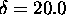
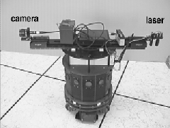
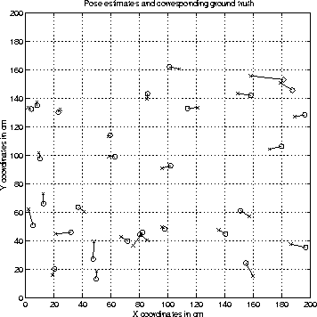
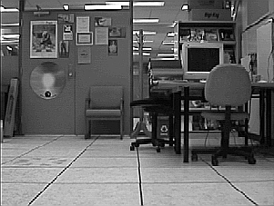
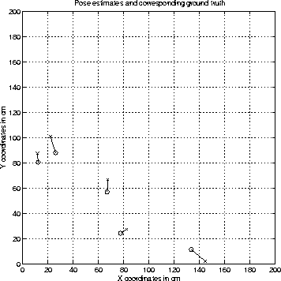

Given many of the difficulties posed by estimating ground truth in Scene III, a second experiment was conducted aimed at improving the accuracy of ground truth. Scene IV is depicted in Figure 6.15. In this scene, a camera was mounted on an RWI B-12 mobile robot (Figure 6.16). In addition, a laser was mounted on the back of the robot, equipped with a lens that split the beam into a straight line, aligned perpendicular to the image-plane of the camera. The mounted laser was used to obtain ground truth by accurately positioning the robot within 0.5cm of the desired pose, and oriented to within . Training images were taken at cm intervals over a 2.0m by 2.0m grid. Despite the improved dead reckoning, the unevenness of the floor led to some variation in image alignment.

Figure 6.16: The RWI with mounted camera.
Once training images were collected, a series of 30 test images were
taken from random positions in order to test the method.
Figure 6.17 presents the set of estimates obtained from
the method, plotted against their ground-truth. The mean error in
position is 6.3cm or 31% of  .
.

Figure 6.17: The set of
pose estimates obtained for Scene IV. The mean estimation error is 6.3cm.
In order to test the claim that the method is robust under changes in the environment, five more test images were taken of the scene, with one of the foreground chairs moved back against the wall (Figure 6.18).

Figure 6.18: Altered Scene IV
Figure 6.19 depicts the set of results obtained for the five test images. The mean error is 9.4cm. Clearly, the method works very well in the face of a change which would wreak havoc with many existing localisation solutions.

Figure 6.19: Results from altered Scene
IV. The mean estimation error is 9.4cm.